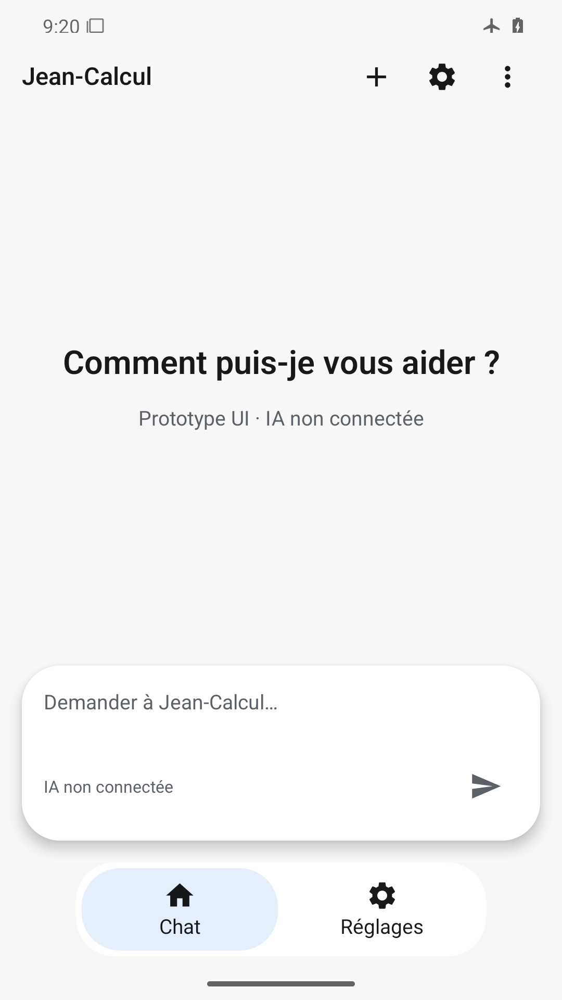
Accueil et statut lisibles, capsule et navigation à deux destinations complètes, marges système respectées.
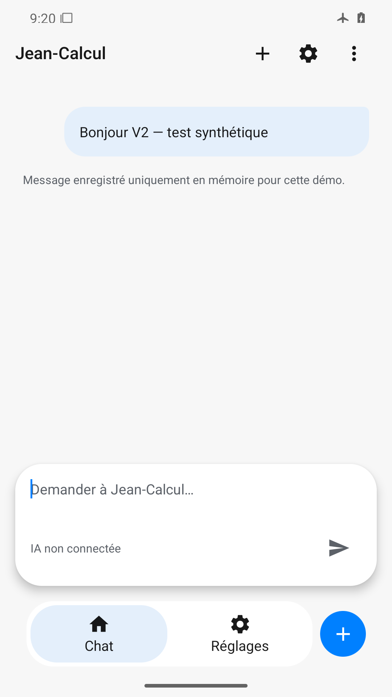
Message et avertissement mémoire lisibles ; navigation et action nouvelle conversation visibles après fermeture du clavier.
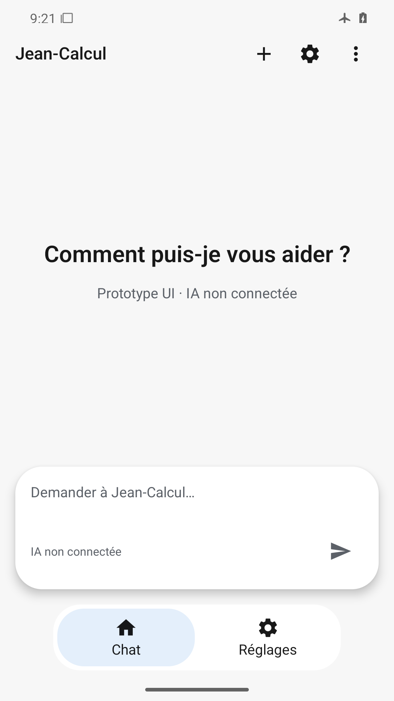
Accueil restauré, message absent et navigation complète avec Chat sélectionné.
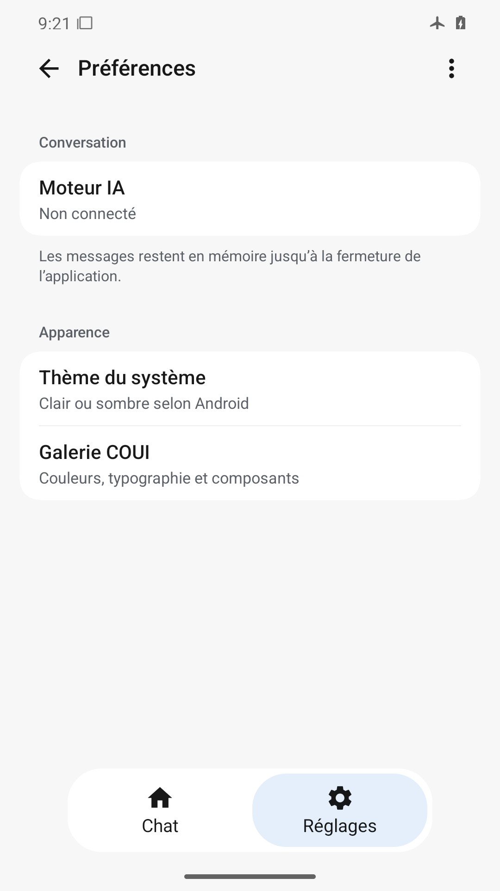
Groupes natifs, résumés et séparation lisibles ; navigation complète avec Réglages sélectionné.
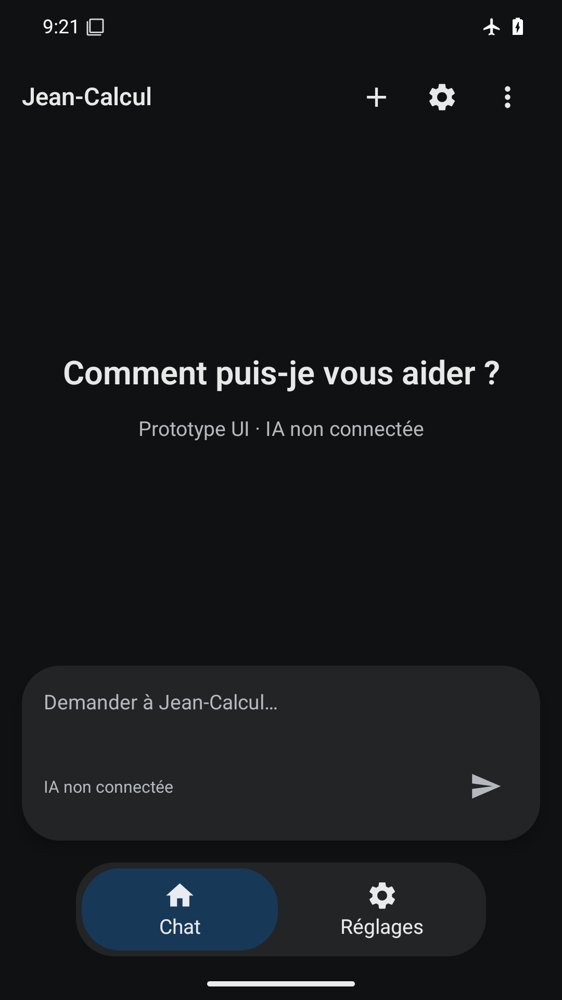
Surfaces sombres distinctes, texte et icônes clairs, onglet sélectionné contrasté et barres système lisibles.
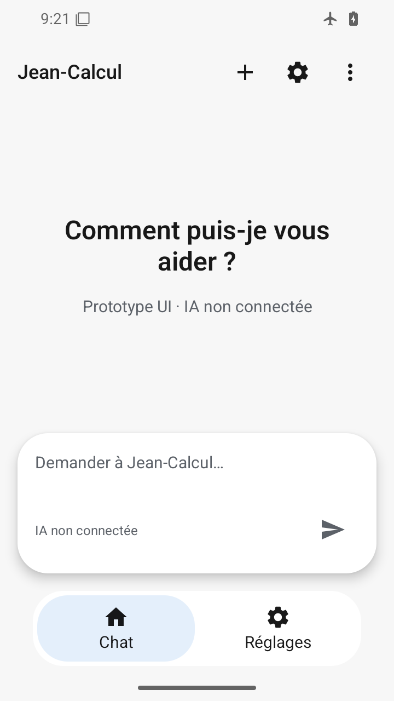
360×640 dp : titre sur deux lignes sans coupure, capsule et navigation accessibles au-dessus du geste.
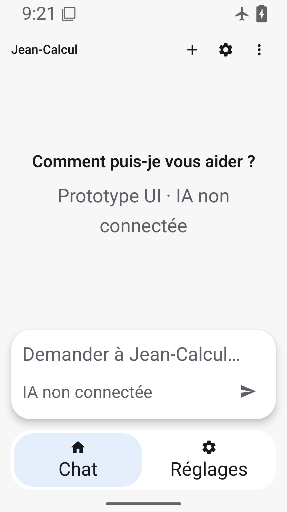
Police 200 % : corps et destinations agrandis sans coupure, navigation à hauteur libre ; titres COUI fixes documentés.
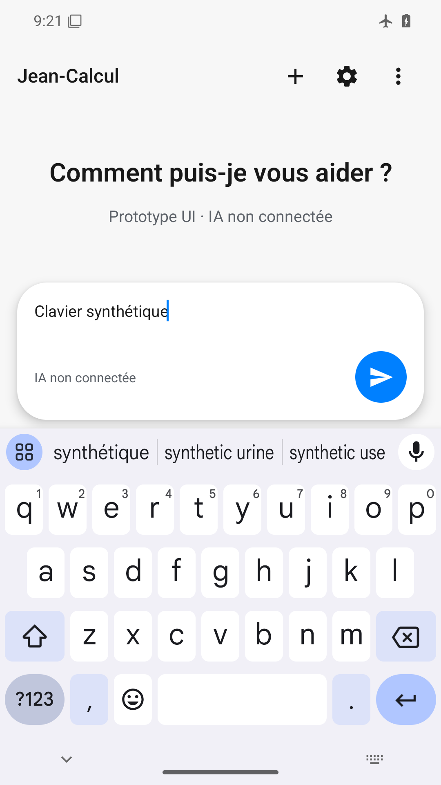
Le clavier et Envoyer sont visibles ; l’en-tête reste hors écran malgré la frontière de relocation, chemin de saisie legacy encore actif.
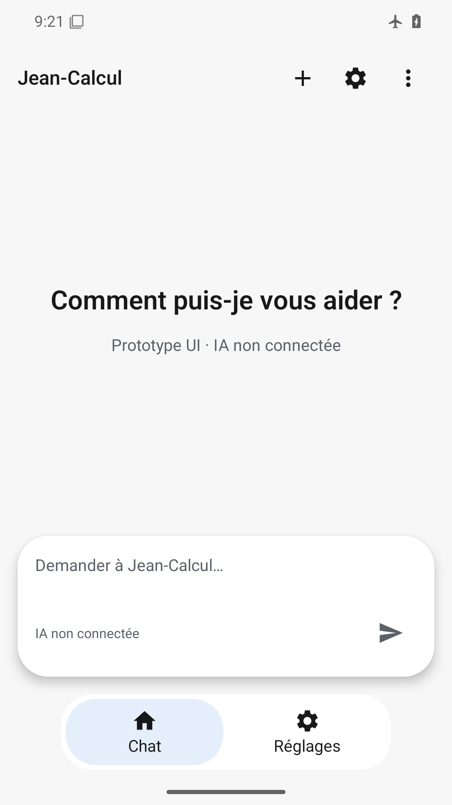
État final avec animations désactivées lisible, navigation et saisie complètes ; fluidité physique non prouvée.
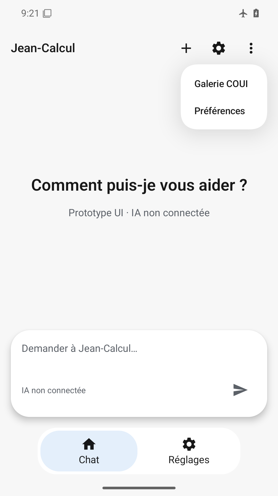
Menu natif ancré à droite, deux entrées lisibles ; navigation et saisie non masquées.
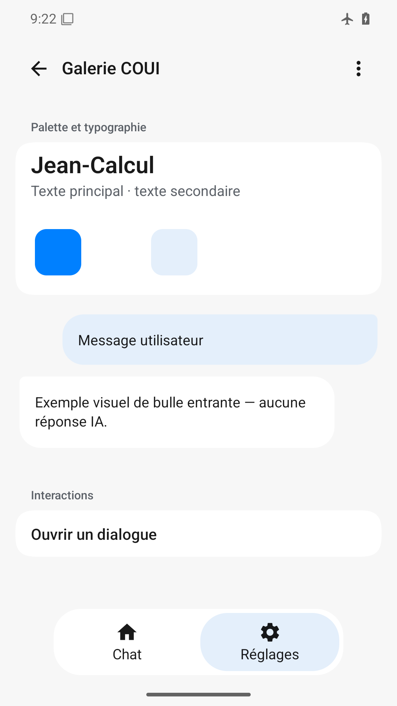
Typographie et bulles illustratives lisibles, navigation désormais complète ; swatch blanc sur surface blanche peu distinct.
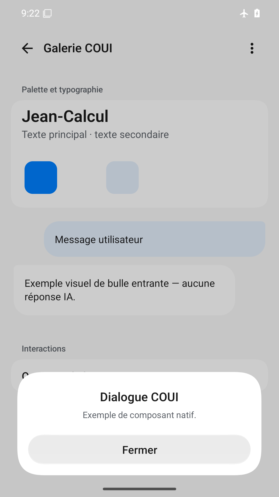
Dialogue natif lisible avec action Fermer et marge au-dessus du geste ; arrière-plan assombri.
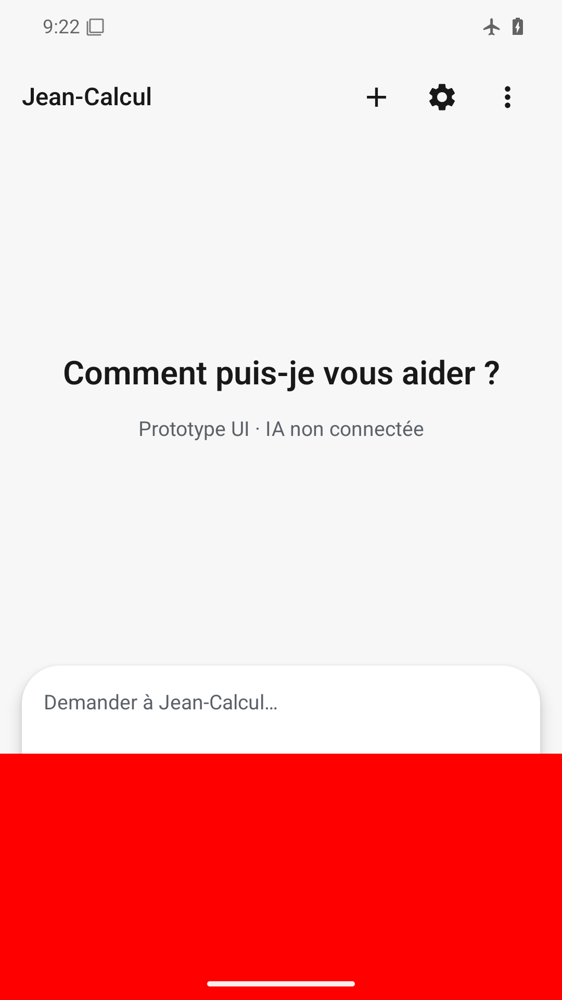
Surcouche rouge en bas masquant navigation, bouton Envoyer et une partie de la capsule, défaut volontaire détecté.